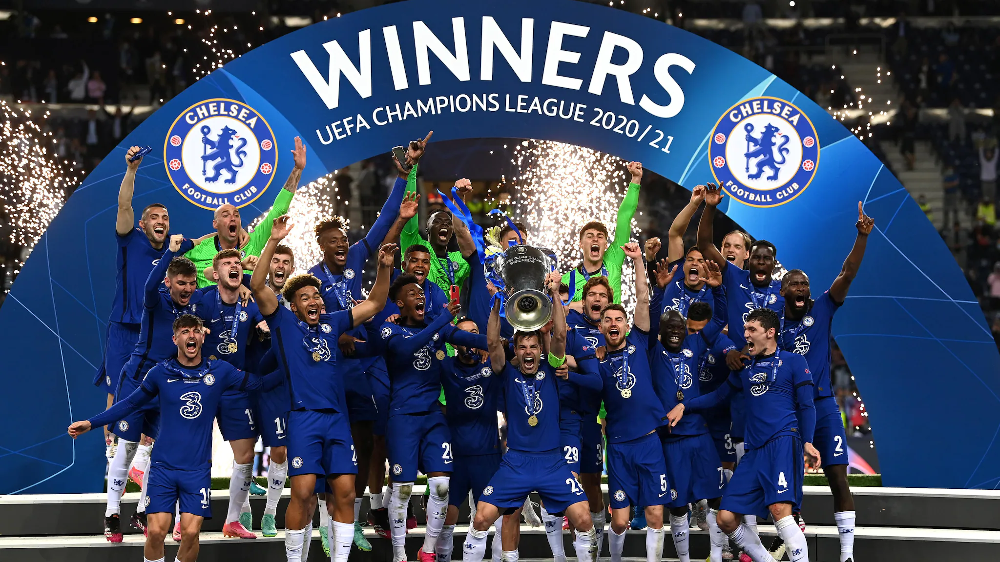
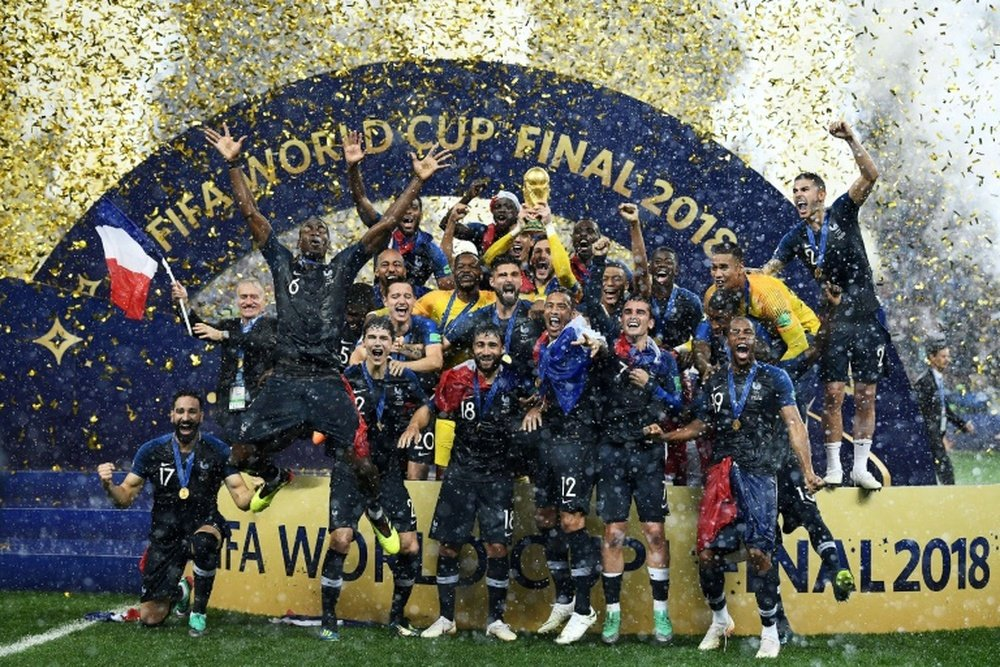

The Bundesliga, sometimes referred to as the Fußball-Bundesliga, Bundesliga is a professional association football league in Germany. At the top of the German football league system, the Bundesliga is Germany's primary football competition. The Bundesliga comprises 18 teams and operates on a system of promotion and relegation with the 2. Bundesliga. Seasons run from August to May. Most games are played on Saturdays and Sundays, with a few games played on weekdays. All of the Bundesliga clubs qualify for the DFB-Pokal. The winner of the Bundesliga qualifies for the DFL-Supercup.
Fifty-six clubs have competed in the Bundesliga since its founding. Bayern Munich has won the title 30 times, the most among Bundesliga clubs. However, the Bundesliga has seen other champions, with Borussia Dortmund, Hamburger SV, Werder Bremen, Borussia Mönchengladbach, and VfB Stuttgart most prominent among them. The Bundesliga is one of the top national leagues, ranked fourth in Europe according to UEFA's league coefficient ranking for the 2020–21 season, based on performances in European competitions over the past five seasons. The Bundesliga led the UEFA ranking from 1976 to 1984 and in 1990. It has also produced the continent's top-rated club six times. Bundesliga clubs have won eight UEFA Champions League, six UEFA Europa League, four European Cup Winners' Cup, two UEFA Super Cup, two FIFA Club World Cup, and three Intercontinental Cup titles. Its players have accumulated nine Ballon d'Or awards, two The Best FIFA Men's Player awards, three European Golden Shoe, and three UEFA Men's Player of the Year awards including UEFA Club Footballer of the Year.
Bundesliga



